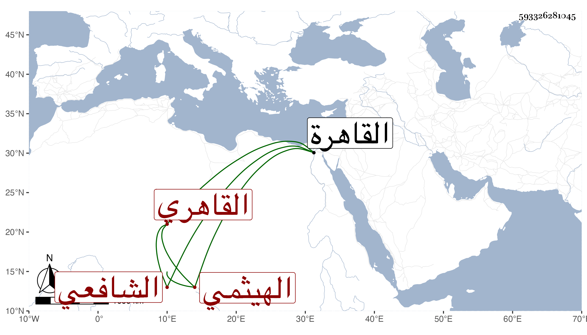

0902Sakhawi.DawLamic.ITO20230111-ara1.EIS1600.593326281045
Biography ID: 593326281045
179
عبد الله بن محمد بن أبي بكر بن سليمان بن عمر بن صلح الجمال الهيثمي القاهري الشافعي أخو عبد العزيز وابن أخي الحافظ أبي الحسن علي بن أبي بكر الآتي . ولد سنة ستين أو بعدها وأحضر في الخامسة عند البياني الأول من فوائد الصقلي . وأجاز له العز بن جماعة والنشاوري والشهاب بن ظهيرة وغيرهم . وحدث سمع منه الفضلاء من أصحابنا كابن فهد والسنباطي بل ممن قبلهم ابن موسى المراكشي الحافظ ومعه شيخنا الموفق الأبي وفي الأحياء جماعة ، وكان أحد الصوفية بالتربة الظاهرية بالصحراء خيرا دينا ساكنا حسن السمت نير الشكل والشيبة . مات في جمادى الأولى سنة إحدى وأربعين بالقاهرة رحمه الله ، وقد ذكره شيخنا في معجمه وقال أجاز لي في استدعاء ابني محمد .
